There's more to Birmingham than the Commonwealth Games

Birmingham Town Hall. Photography: Claire Menary
There's never been a better time to discover the rough-hewn charms and booming culinary scene of England’s ‘Second City’. These are the best places to eat, drink and stay in B'ham. Words by Kerry Parnell. Photography by Claire Menary.
“They don’t know what they’re on about – you’re bloody gorgeous,” the glamorous young woman bellows at her friend in a broad Brummie accent, as they clatter up the stairs ahead of me in a busy bar-bistro in Birmingham. And to be honest, there’s no better way of describing the city in the heart of England. It has long hidden its charms, but Birmingham is an absolute revelation.Buzzing with life, its city centre thrumming with locals enjoying the bars, restaurants, cafes and thriving arts scene, Birmingham is enjoying a gourmet groove and it’s a case of wham, B’ham, thank you from this ma’am.
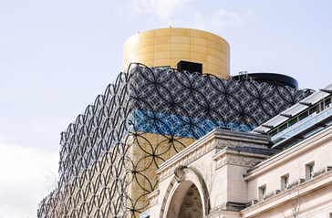
Britain’s ‘second city’ is about to take top position when it hosts the Commonwealth Games in July and August. As well as the Games – the first sustainable games – visitors will have plenty to entertain them, including wandering around the city and along its famous canals, and enjoying the arts scene, from the Birmingham Royal Ballet to rock concerts. And that’s before they get to the vast array of eateries.
Related story: Thinking about heading to London in the next year? You need to read this
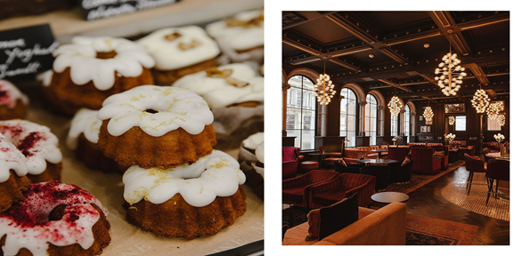
Everywhere I go, locals spontaneously tell me how proud they are of their city. At the Birmingham Brewery Company, a sustainable brewery which makes craft Brummie beer from its base in Stirchley, one punter almost weeps as he earnestly tells me, “For the first time in my life, I’m proud to be from Birmingham.” Admittedly, he had polished off several pale ales, but he should be proud – not least for the city’s food and drink scene.
“BRITAIN’S ‘SECOND CITY’ IS ABOUT TO TAKE TOP POSITION WHEN IT HOSTS THE COMMONWEALTH GAMES IN JULY.”
Birmingham is full of independent eateries. You can eat food from all over the world for every budget, from the city’s famous balti curries and street food at the hip Hockley Social Club, right up to fine dining. Birmingham is home to five Michelin-starred restaurants: Purnell’s, Carters of Moseley, Adam’s, Simpsons Restaurant and Opheem.
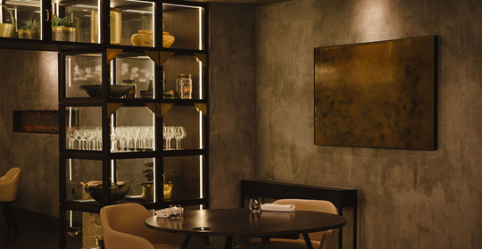
I begin my gastronomic tour in Purnell’s, which has been a Birmingham institution for 15 years. The masterful modern-British menu serves up dishes such as haddock foam with roasted cornflakes and a spin on 1970s cheese and pineapple with dehydrated frozen pineapple and silver leaf. But the stand-outs are its famous desserts, including chef Glynn Purnell’s signature dish, burnt English egg custard surprise – a form of crème brulee with which he won the Great British Menu TV show and probably wishes he could stop making but will never be able to, because it’s truly magnificent. Served in eggshells, it comes with a pink lady apple and miso caramel, pine nut crumble on my visit.
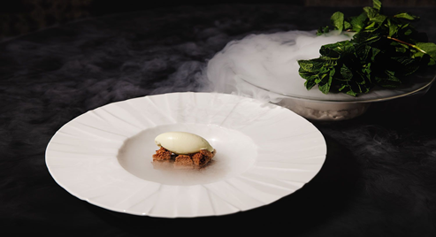
While Purnell’s is classic, Carters of Moseley is creative; this unassuming, dark little restaurant in the cool suburb of Moseley is like a metaphor for the city – you have to know it’s there, but when you find it, you’ll be astounded.
Chef Brad Carter is one of those inspiring people so passionate about their craft that they stop at nothing to challenge themselves. His menu is British – so British, in fact, that barring a few exceptional items, he won’t use anything, right down to lemons or black pepper, that isn’t grown in the UK. Instead, he creatively seasons his food with indigenous ingredients, many grown on his own allotment.
Related story: Inside the epic new first class suites for Qantas’s non-stop London flights
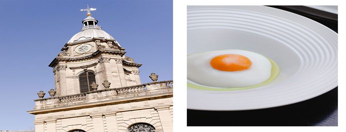
Every course of the tasting menu is a flavour explosion, from the monkfish liver and Exmoor caviar amuse-bouche, to his superb Birmingham Soup, a beef consommé with tartare of ox heart, seasonal veg and a lattice tuile mimicking the design of the Library of Birmingham.
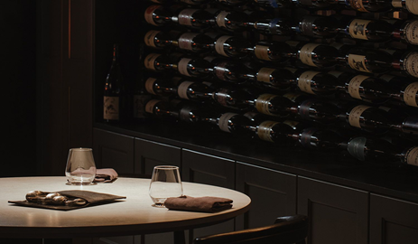
Everything is thought out and nothing is wasted in this sustainable restaurant, even the tableware is made by a local potter using ashes from the kitchen’s barbecue and, until it was damaged in a flood, the flour came from nearby Sarehole Mill, a watermill which inspired local author J.R.R. Tolkien’s Middle Earth.
It’s not all fine dining, Birmingham is also famous for a completely different cuisine: the curry. And true to style, even that has been turned into an art form. The Balti Triangle is home to the city’s favourite dish – the balti. Invented in the late 1970s by local curry houses, the dish is cooked and served in a special balti bowl, a kind of mini wok
Related story: What to do if your flight is cancelled, according to an airline worker
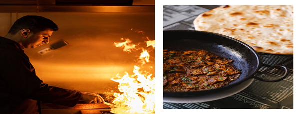
At Shababs, one of the remaining few Balti houses, owner Zafar Hussain gives me a quick – and I mean quick – cooking demonstration of the perfect balti, which is cooked at extremely high temperature and eaten from the same bowl. It’s basically a stir-fry, with spices including paprika, cumin and turmeric. His version is surprisingly light, which he credits to using vegetable oil over ghee. “It’s going to clog your arteries, otherwise” he says.
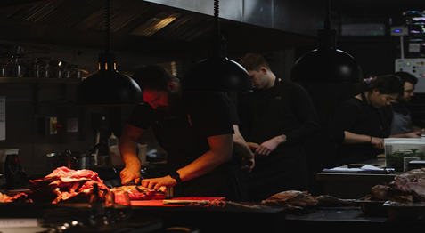
While the Balti Triangle once catered to post-pub diners, times are changing along with consumers’ tastes – and so I head back to the city for a completely different Indian food experience. Mowgli Street Food in Grand Central shopping centre is part of a burgeoning chain by innovative entrepreneur Nisha Katona of tiffin-style fast-food restaurants which use super-fresh ingredients, much of them vegetarian and vegan. The Mowgli Paneer, with its velvety cheese and soft spices, is delicious, as is house ‘showstopper’ the Bunny Chow, a tangy chicken and potato curry served on a bread loaf.
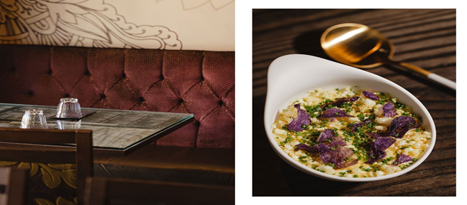
At the other end of the scale, in its own sphere, is Michelin-starred Opheem by another passionate Brummie, chef Aktar Islam.
“Having the choice of living anywhere in the world, I choose to live here, I love Birmingham,” he says.
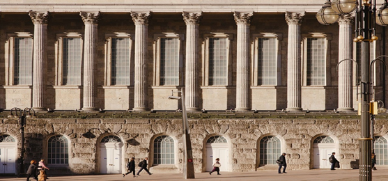
But what he loves even more is the challenge of creating progressive Indian cuisine, on a par with perhaps only two other restaurants in the world: Masque in Mumbai and Haoma in Bangkok. “We are all about taking the aura of a dish and instilling a spirit into it,” he says, maintaining he doesn’t make food to look good, only taste good. But that’s being modest, because dishes such as his Aloo Tuk manage to do both. The humble achaari pink fir potato is manipulated five ways to produce a dish I’d be happy to eat on its own for the rest of my life.
Thankfully, after all this curry, I discover another benefit of Birmingham is its walkability. The city centre is easy to stroll around from my base in the heritage The Grand Hotel, a former Grand Dame of the city overlooking Cathedral Square, which hosted everyone from Charlie Chaplin to Winston Churchill and Malcolm X and has now been lovingly brought back to life.
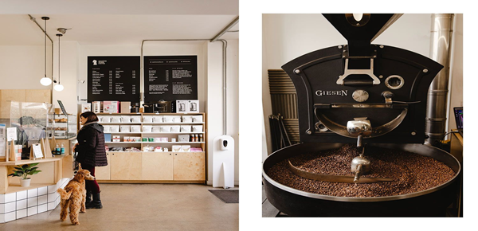
With knowledgeable local tour guide Mary Moore, I wander everywhere, from the iconic Library of Birmingham, the cultural hub of the city with its delightful secret garden, along the canal to Brindley Place, a pretty waterside area of eateries that comes alive at night, and around the historic Jewellery Quarter.
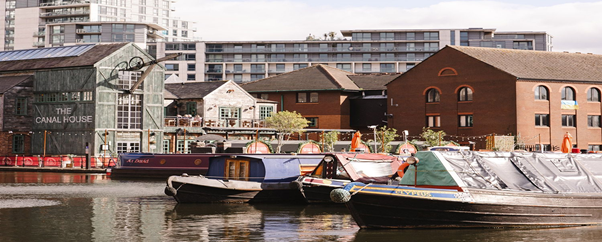
All this activity is punctuated with pit-stops at some of the city’s excellent independent coffee shops, including industrial cafe and roastery Quarter Horse Coffee on Bristol St and local favourite Faculty Coffee in pretty Piccadilly Arcade, which rotates its beans every two weeks. Then there’s Medicine Bakery, with its Instagrammable cronuts. This artisan, ethical bakery mixes food with art in beautiful and surprising industrial spaces.
Which pretty much sums up Birmingham, really
Mailing
Sign up for out mailing list to get latest update and offers
We respect your privacy
© Copyright: Group 5 - FPT Aptech